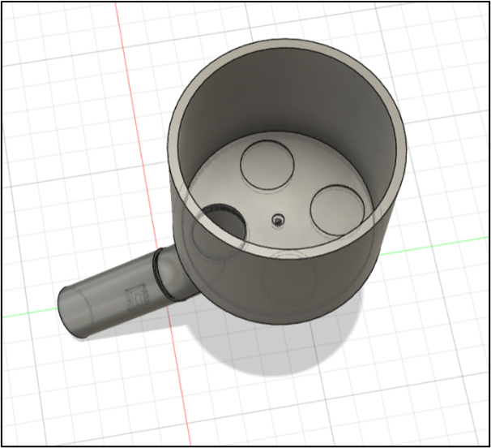

Project - PremiumGolf
Voorwoord
In dit rapport is het advies vastgelegd voor de opdrachtgever PremiumGolf. Deze gaat over de verschillende processen van het opduiken van golfballen t/m de verkoop. Dit project is uitgevoerd tussen 17-09-2024 t/m 28-01-2025. Wij willen in het bijzonder Ralph Rekkers bedanken voor het mogelijk maken van dit project. Ook willen wij onze dank uitspreken aan Pim de Graaf en Maarten Rommens die met hun begeleiding en feedback dit verslag mede mogelijk hebben gemaakt.
Team 2: Pieter van Leeuwen, Mika Keizer, Kevin Kang en Tibbe Quist
Technasium KKC, 2024-2025
Inleiding
Dit project is uitgevoerd voor PremiumGolf, een groeiend bedrijf die golfballen opduikt, hergebruikt en verkoopt (lakeballs). Het bedrijf is opgericht door Ralph Rekkers, Luco en Tristan van Oyen. Zij hebben verschillende processen opgesteld voor het verwerken van de golfballen. Deze processen zijn niet heel snel en hebben veel verouderde onderdelen. Denk hierbij aan de vele handmatige onderdelen en de verouderde schoonmaakmachine. Hierdoor kan het proces wel tot 5 dagen oplopen.
Opdracht
We hebben de onderzoeksvraag een beetje aangepast, omdat het bleek dat er bij de andere delen van het proces ook veel verbetering kon worden bedacht. De eerste onderzoeksvraag was dus niet helemaal compleet.
De eerste onderzoeksvraag luidt:
Hoe kan PremiumGolf op een betaalbare manier worden geholpen om het sorteer- en/of schoonmaakproces van de golfballen te versnellen?
De huidige onderzoeksvraag luidt:
Hoe kan PremiumGolf op een betaalbare manier worden geholpen om het hele proces van de golfballen hergebruiken te versnellen?
Deelvragen
- Hoe verloopt het huidige proces bij PremiumGolf en waar ligt het grootste probleem?
We gaan goed kijken naar het huidige proces, en we gaan kritisch kijken wat er hier goed gaat, en wat er minder gaat. Vervolgens gaan we de grootste problemen beschrijven.
- Wat zijn de eisen die PremiumGolf stelt aan het proces?
We vragen PremiumGolf wat hun eisen zijn, vervolgens maken we er zelf ook nog een paar.
- Welke apparaten bestaan er al voor het hergebruiken van golfballen?
We gaan onderzoek doen naar bestaande apparaten die worden gebruikt in het proces van lakeballs, dit zijn zowel degene die PremiumGolf gebruikt, als alternatieven.
- Welke apparaten gebruikt PremiumGolf al en zouden ze door vervangen winst kunnen maken?
We kijken hier kritisch naar de prestaties van de huidige machines. We kijken of het beter kan, en of een andere machine misschien beter is voor op de langere termijn.
- Zijn er delen van het proces dat geautomatiseerd kunnen worden en wat zou het voordeel daarvan zijn?
We gaan kijken naar alle handmatige onderdelen in het proces, en kijken of er methodes bestaan hoe dit geautomatiseerd kan.
- Hoe gaan andere bedrijven die golfballen opduiken te werk? (Denk hierbij aan de snelheid en methodes)
We gaan kijken of er soortgelijke bedrijven zijn, en kijken hoe deze bedrijven het doen.
Veldonderzoek
Langsgaan bij opdrachtgever
Voor de kick-off zijn Mika en Pieter langsgegaan bij de opdrachtgever. Daar heeft Pieter het hele proces laten zien en hebben ze vragen gesteld aan Ralph, de opdrachtgever.
Daar zijn de volgende conclusies uit gekomen:
- Een mogelijke sorteermachine kan maximaal 3 bij 4 meter zijn. Meer ruimte is er niet.
- Pieter sorteert ongeveer 1800 ballen per uur. En met voorkeur heeft PremiumGolf een sorteermachine die minimaal zo snel is.
- Er is een verouderde schoonmaakmachine die met de hand bediend moet worden en aan het roesten is. (figuur 7)
Sortering
- Een aantal merken hebben hun eigen krat, zoals Pinnacle en Wilson, maar andere merken, zoals Top Flite en Spalding, worden niet apart gesorteerd, maar samen in één krat, wat verkocht wordt als mix. In totaal zijn er 14 stapels van verschillende ballen.
- Hetzelfde geldt voor gekleurde golfballen; sommige ballen worden bij hun eigen merk in een krat gegooid, andere merken of types worden bij de gekleurde mix gesorteerd.
- Er zijn Range golfballen, die te herkennen zijn aan één of meerdere strepen onder elkaar. Deze ballen zijn speciale oefenballen en mogen niet op de echte golfbaan gebruikt worden. Daarom moeten ze apart gehouden worden, ondanks dat ze van bekende merken zijn.
- Als er heel veel schade is aan een bal, zoals krassen of scheuren, worden ze in een aparte krat gesorteerd.
Kortom; er zijn veel dingen waar de machine die we gaan ontwerpen rekening mee moet houden, namelijk merk, kleur en kwaliteit.
Onderzoeksresultaten
Met de gegevens die we hebben verzameld in het onderzoek, zijn we even goed gaan kijken naar het proces van PremiumGolf. Hier hebben we alle vragen over de snelheid van elk onderdeel van het proces gesteld die we konden bedenken, en vervolgens deze zo goed mogelijk beantwoord. We hebben alles op volgorde gezet, de dubbele stappen in het proces hebben we eruit gehaald.
- Golfballen worden opgedoken
Golfballen worden een voor een met de hand van de bodem gehaald. Bestaan er tools om meer ballen tegelijk van de bodem te halen?
• Er bestaat een tool die je over de bodem kan halen genaamd de Wrangler. Het is een soort cilinder aan een ketting en als deze over de bodem schuift neemt hij golfballen mee. Om hem te gebruiken moet je hem wel steeds naar de andere kant van het water van plaatsen om hem vervolgens weer aan land te trekken.
Zijn de netten groot genoeg? Of misschien te groot?
• PremiumGolf vindt zelf de netten erg fijn. Het is dus niet nodig om hier iets aan te veranderen.
Kan het oprapen van golfballen geautomatiseerd worden?
Automatisering is moeilijk, maar niet onmogelijk. Daarbij zijn twee ideeën.
1. Onder water: Een onderwater-robot met een camera die ronde voorwerpen kan detecteren, en daarbij naar dat voorwerp toe gaat en hem dan opzuigt. Het probleem is dan wel dat naast de golfballen ook andere voorwerpen kunnen worden opgezogen.
2. Boven water: Personeel met een soort stofzuiger met een camera aan de onderkant, die ballen kunnen herkennen, is een ander idee. Dan moet het personeel de stofzuiger een soort activeren, waardoor de bal wordt opgezogen.
Beide ideeën zijn ingewikkeld om te realiseren, maar als we hier veel tijd in steken, zou het moeten lukken. De vraag is wel of dit wel nodig is.
Het kost erg veel tijd om alle golfballen van de bodem te krijgen kan dit sneller?
• Met de Wrangler die eerder genoemd was zou dit dus mogelijk sneller kunnen. Ook zou het mogelijk zijn om kleinere tools te maken waarmee je sneller golfballen kan oppakken. Hier moeten we dan wel nog verder onderzoek naar doen.
Er zijn ook veiligheidsrisico's als er bijv. scherpe voorwerpen op de bodem liggen waar je wonden aan kunt oplopen.
• Omdat in sloten vaak troebel water is, zie je inderdaad geen scherpe objecten. Het beste is dus om stevige handschoenen en kleding te dragen bij het duiken.
- Golfballen worden naar het bedrijf gebracht
Worden de ballen efficiënt in de auto vervoerd? Is de auto wel groot genoeg?
De ballen worden vervoerd in een Citroën busje. PremiumGolf is hier tevreden mee. Ze zouden in de toekomst een grotere bus kunnen aanschaffen als ze dat willen.
Past er niet te weinig in de golfkarretjes?
Er moet meerdere keren heen en weer gereden worden, maar dit duurt niet heel lang. Het is ook niet echt mogelijk om met een bus de baan op te gaan, omdat dit de baan beschadigt.
- Golfballen worden schoongemaakt in machine
Er moet wel steeds iemand bij staan om de ballen aan te prikken met een stok als de machine verstopt zit. Kunnen we hier een oplossing voor vinden?
• Als we kijken naar de huidige machine zouden we misschien een mechanisme kunnen maken dat de ballen in beweging houdt zodat ze blijven stromen.
Of hebben ze een hele nieuwe machine nodig?
• De huidige machine is al oud. Een nieuwe machine kopen is dus een goed idee. We zouden dezelfde machine kunnen kopen, of voor een ander model gaan. Als we een nieuwe machine willen moeten we hier dus verder onderzoek naar doen.
Mogelijke schade aan golfballen.
• Het is mogelijk dat de machine schade aanbrengt aan de ballen. Dit maakt niet heel veel uit als dit af en toe gebeurt omdat PremiumGolf ballen van verschillende kwaliteiten verkoopt.
- Ballen moeten drogen in de zon
Dit kan tot wel drie dagen duren, kan dit sneller?
• In de zon kan dit niet sneller. Dus als we dit sneller willen moeten we dit kunstmatig doen. Bijvoorbeeld met warmte of wind. Als we dit willen moeten we hier verder onderzoek naar doen.
Wat als er geen zon schijnt?
• Als de zon niet schijnt zal het dus lang duren voordat de ballen droog zijn. In dit geval duurt het dus tot wel 3 dagen.
De golfballen kunnen verkleuren door lange blootstelling aan zonlicht.
• Dit effect zal wel minimaal zijn aangezien ze allemaal niet langer dan een paar dagen in de zon liggen. Als dit echt zichtbaar wordt zullen we dus wel een manier moeten zoeken om de ballen zonder de zon te drogen.
Er kan vuil komen op de golfballen als je ze buiten laat staan waardoor je ze weer moet schoonmaken.
• De ballen kunnen makkelijk worden afgeschermd door bijvoorbeeld iets ervoor te zetten, zodat ze uit de wind liggen.
- Als het regent kunnen de golfballen niet drogen, dus staat het proces stil.
• Regenachtige dagen zijn daarom slecht voor PremiumGolf. Daarom is het handig als we hier een oplossing voor bedenken. Ze kunnen de ballen natuurlijk half binnen de loods leggen, onder het afdak, maar dit gaat een stuk langzamer.
- Ballen worden gesorteerd op merk en kleur
Werknemers zoals Pieter zijn niet altijd beschikbaar, dus PremiumGolf moet veel zelf sorteren, wat veel tijd kost. Automatiseren?
• Op het ene moment zijn er meer ballen die gesorteerd moeten worden dan op het andere moment. Daarom is Pieter soms meer nodig dan op andere momenten. Met de hoeveelheid die Pieter nu werkt gaat het snel genoeg, maar als het bedrijf groeit is dat dus niet meer zo. Oplossingen hiervoor zouden zijn om bijvoorbeeld nog iemand aan te nemen, iemand fulltime aan te nemen of het proces te automatiseren. Deze opties kosten natuurlijk allemaal geld, en daarom is het belangrijk om te kijken of PremiumGolf deze oplossingen nu wel nodig heeft.
Met gooien kan wel eens misgegooid worden en als de krat te vol of te leeg is stuitert de bal uit de krat.
• Omdat golfballen natuurlijk rond zijn en stuiteren, gebeurt het nog wel eens dat ballen wegstuiteren. Dit is natuurlijk onnodige verspilde tijd. Kunnen we misschien iets bedenken dat dit niet meer gebeurt? Dus bijvoorbeeld iets wat we op de kratjes kunnen bevestigen, of een andere tool die het sorteren makkelijker maakt. Als we dit probleem groot genoeg vinden, kunnen we hier verder onderzoek naar doen.
- Ballen worden in bleekvat gestopt
De ballen moeten er 14 uur inliggen, kan dit proces korter?
• Het toevoegen van warm water (rond 40-50°C) aan het bleekmiddel versnelt de chemische reactie en kan de benodigde tijd verkorten. Let wel op dat te heet water het plastic van de golfballen kan beschadigen.
Er blijven soms een paar ballen vies, kunnen we hier iets aan doen?
• Nu worden de ballen gewoon opnieuw in een bleekvat gedaan. Aangezien het aantal ballen dat vies blijft minimaal is maakt dit niet heel veel uit.
Zijn er misschien meer vaten nodig?
Op dit moment niet. Maar als het bedrijf verder groeit kan PremiumGolf deze zelf aanschaffen.
- Ballen worden gesorteerd op type en kwaliteit
Het kost mankracht en tijd, kan dit efficiënter en effectiever?
De ballen worden nu nog handmatig gesorteerd en gaat niet heel snel, namelijk ongeveer 25-30 minuten per krat. Op type sorteren kan mogelijk geautomatiseerd worden met een machine. Maar op kwaliteit sorteren is eigenlijk iets wat alleen een mens goed kan doen. Als we graag wel het sorteren op type willen automatiseren moeten we hier verder onderzoek naar doen.
- Ballen worden opgeslagen en verkocht
Er moet een aparte plek voor kapotte ballen of ballen die opnieuw schoongemaakt moeten worden.
We hebben dit nagevraagd en dit bestaat allebei al. Hier hoeven wij dus niet over na te denken.
Nu staan de kratten door de hele loods, kunnen we misschien helpen met dit beter organiseren?
De loods staat best vol, en de kratten met ballen die klaar voor verkoop zijn staan wel mooi geordend in de stellingen. Alleen de kratten met ballen waar nog wat mee moet gebeuren staan verspreid, maar ze staan wel waar ze nodig zijn. We zouden dus een systeem hiervoor kunnen bedenken, maar dit is niet noodzakelijk.
Is er wel genoeg ruimte voor de ballen?
Er is voor nu meer dan genoeg ruimte voor de ballen, zeker voor de schone ballen in de stellingen.
Ballen moeten met de hand geteld worden wanneer een bestelling wordt klaargemaakt. Kan dit beter?
Ja, dat kan beter. We kunnen makkelijk een machine ontwerpen die de ballen automatisch telt. Alleen is dit niet een heel groot probleem en dus ook niet van hoge prioriteit.
Is het niet te veel werk om zelf alle pakketjes te maken?
Meestal niet, het ligt eraan hoe druk het is. Bovendien, het hoort bij het werk. Er is genoeg tijd om de pakketjes zelf klaar te maken. Het is dus ook niet nodig om dit te veranderen.
Conclusie veldonderzoek
- Sorteren
- Drogen van de ballen
- Kratten verplaatsen
- Schoonmaakmachine
- Bleken versnellen
- Opduiken (gedeeltelijk) automatiseren
- Ballen tellen bij bestellingen
We hebben deze problemen in een Trade-off matrix gezet. Hierin hebben we ze tegen elkaar afgewogen op verschillende factoren. Degene met de hoogste scores hebben we gekozen om verder mee te werken.
Oplossingen & Eindproducten

Sorteren
We hebben besloten om het sorteren niet te automatiseren. Wel om het makkelijker te maken. We hebben een tafel ontworpen geïnspireerd door die van Easy Lakeballs waarmee het sorteren van de ballen een stuk makkelijker wordt. Deze heeft 14 gaten, aangezien er nu 14 soorten stapels kratten zijn. De ballen die nog gesorteerd worden kunnen vooraan in een soort opvangbak liggen. Onderaan de gaten hangen golfbalnetjes, en deze kunnen makkelijk worden losgemaakt en worden geleegd in de zakken.
We hebben hier een 3D-model van gemaakt om te laten zien hoe het eruit zou zien, maar een echt exemplaar zou van hout moeten worden gemaakt. Dan is het ook nog mogelijk om extra gaten toe te voegen als het bedrijf dit graag wil. In elk geval zal dit het sorteerproces bij PremiumGolf makkelijker moeten maken en zou het proces waarschijnlijk ook kunnen versnellen.
Kratten
Een volle krat golfballen kan tot wel 25 kg wegen. Bij PremiumGolf hebben ze veel opgestapelde kratten staan, en dus is het vaak veel moeite als je een krat onder op de stapel nodig hebt. Als je een grote stapel kratten wil verplaatsen, duur dit ook lang, omdat elke krat individueel verplaatst moet worden. Er zijn wel een paar karretjes waar de kratten op kunnen, maar dit zijn er nog niet genoeg. En aangezien het bedrijf nog aan het groeien is, komen er steeds meer kratten en ballen, en wordt het tekort nog groter.
Daarom is ons advies voor dit probleem om meer karretjes aan te schaffen. Hierdoor kunnen de kratten veel gemakkelijker en sneller verplaatst worden. We raden ook aan om als het bedrijf nog meer groeit, bij te houden of er nog meer karretjes nodig zijn, en deze dan ook aan te schaffen.
Schoonmaakmachine
We adviseren ook aan PremiumGolf om een nieuwe schoonmaakmachine te kopen bij Hollrock. Er zijn meerdere opties voor ballenwassers. Aangezien we geen ball shooter nodig hebben kunnen we kiezen uit de 24K, 38K en de 56K. Voor het bedrijf is een 24K op dit moment meer dan genoeg. Maar als het bedrijf graag nog wil uitbreiden, is het misschien handiger om een grotere te nemen. Dit is echter iets wat het bedrijf zelf kan beslissen.
De 38K en 56K zijn beide beschikbaar op 220V. Deze kunnen dus makkelijk worden aangesloten op het stroomnet. Als het bedrijf de 24K wil, die alleen beschikbaar is in 110V, zullen ze ook een elektricien moeten inhuren om ervoor te zorgen dat de machine alsnog aangesloten kan worden. De makkelijkste manier om dit te doen is met een transformator.
Hollrock is een bedrijf in de Verenigde Staten. Gelukkig kunnen we machines in Nederland bezorgd worden. De transportkosten liggen tussen de €1200 en €2000. Dit is dus wel iets waar het bedrijf rekening mee moet houden.
Telmachine
We hebben zelf een apparaat ontworpen en hiervan een prototype gebouwd. Dit apparaat kan snel en zonder fouten het aantal golfballen automatisch tellen, zonder dat er iemand bij hoeft te staan. Het apparaat bestaat uit vier delen:
- Een cilindervormige bak, groot genoeg om een grote hoeveelheid ballen in op te slaan. Hier gaan de ballen in die geteld moeten worden. Onderaan deze bak zit een gat waar de ballen een voor een doorheen kunnen rollen.
- Er zit een schijf onder in de bak. De schijf heeft vier gaten en draait rond als de machine geactiveerd is. Als de schijf zo staat dat een van de gaten precies op lijn staat met het gat in de bak, kan er een bal doorheen rollen. Dit systeem zorgt ervoor dat de ballen een voor een gaan, en tegelijkertijd schudt het te ballen door elkaar waardoor er geen opstoppingen ontstaan.
- Het volgende onderdeel is de teller. Deze zit in een buis, deze buis zit vast aan het gat van de bak. De buis gaat schuin naar beneden, zodat de ballen blijven rollen. In de buis zit een knop. Als een bal over de knop heen rolt, neemt de knop dit waar en stuurt hij een signaal.
- Dit signaal gaat naar de computer. Op de computer zit een programma waardoor de ballen geteld worden. Er kan een hoeveelheid worden ingevoerd op de computer, en dan kan de computer het aangeven als het aantal ballen bereikt is.
We hebben niet de tijd gehad om het apparaat geheel af te ronden. In een volledig product zouden we nog een paar onderdelen willen toevoegen:
- Een interface op het apparaat, waar je makkelijk het aantal ballen kan instellen. Dit moet nu namelijk via de broncode.
- Een systeem dat de machine stopt als het aantal ballen bereikt is. Dit kan simpelweg door ervoor te zorgen dat de schijf in de machine naar een bepaalde stand gaat als hij klaar is. Een makkelijk oplossing kan zijn dat de motor telt hoeveel stapjes hij neemt, en als het aantal ballen bereikt is zal hij het huidige aantal stappen tellen en daar mee de hoek uitrekenen van de oorsprong. Daarna kan de computer zelf berekenen hoever hij nog moet draaien zodat de schijf precies 45 graden gedraaid is, waardoor er geen ballen meer door kunnen.
- Een mechanisme zodat de bak makkelijk los en vast kan, zodat de ballen die over zijn makkelijk weer terug in de krat kunnen worden gedaan.
- Een simpele standaard waar het apparaat op kan staan. Dit heeft hij namelijk nu nog niet.
Discussie
Tijdens het project zijn er enkele aspecten minder uitgebreid behandeld vanwege tijdgebrek of omdat ze niet tot de hoofdzaken behoorden. Toch hebben we wel onderzoek gedaan naar andere onderdelen die relevant kunnen zijn voor het project.
Conclusie
Hoewel we in dit project vooral gefocust waren op de belangrijkste stappen, zijn er ook andere oplossingen uitgekomen die in de toekomst voor PremiumGolf van toepassing zouden kunnen zijn. Deze verbeteringen kunnen bijdragen aan een snellere werkwijze en een betere inzet van tijd en middelen.